Suit Up.
Initiated in 2015, CNIMUN has grown into a force for diplomacy, critical thinking, and global citizenship — now entering Chapter 2.
CNIMUN 2026 is an immersive simulation that brings the United Nations to life. Students step into the roles of diplomats, engaging in debates, negotiations, and resolutions that mirror the real-world workings of the UN.
The event places a strong emphasis on pressing global issues — from autonomous weapons to regional conflicts. Delegates collaborate, advocate for their country's position, and learn the art of multilateral cooperation.
CNIMUN fosters leadership, public speaking confidence, and cultural exchange. In 2025 our school secured the Overall Best Delegation Award at CNSMUN — and we're aiming higher in Chapter 2.
I came with concerns and sadness in my heart, thinking about the several conflicts and wars of human destruction around the world today. But after experiencing this inaugural ceremony, seeing these excitement-filled eyes of the students, I go back with a reinforcement that you can still make this world peaceful and safe.
Dr. Syed Ibrahim Hon. Consul of the Federal Republic of Germany for Kerala · Chief Guest, CNIMUN Chapter 1Three committees. Three distinct arenas of global diplomacy.
Combatting illicit trade of arms and weapons in regional conflicts, with a special focus on the regulation of lethal autonomous weapons systems globally.
Ensuring International Peace and Security Amid the Israeli–Palestinian conflict and the escalating regional conflict involving the United States, Israel, and Iran.
Journalism & Photography — the fourth pillar of CNIMUN. Delegates serve as journalists and photographers, documenting every heated crisis and diplomatic breakthrough across the two-day conference.
Christ Nagar International School, with great honour, welcomes you to CNIMUN: Chapter 2.
The Model United Nations program at CNIS is more than an activity — it is a legacy of creating global citizens. It nurtures eloquent, progressive individuals to engage with the world's most complex challenges.
With CNIMUN Chapter 2, we strive to bring together dedicated young delegates to deliberate upon crucial global issues and contribute constructively towards achievable, feasible solutions. Delegates are expected to approach committee sessions with extensive groundwork, systematic research, and a commitment to accuracy and credibility.
CNIMUN aims to uphold the guiding principles of international diplomacy. All participants are expected to conduct themselves with professionalism and etiquette befitting a global forum at all times.
The Executive Board remains committed to promoting constructive dialogue and ensuring an intellectually stimulating, respectful environment for all.
Come prepared to Debate. Negotiate. Resolve.